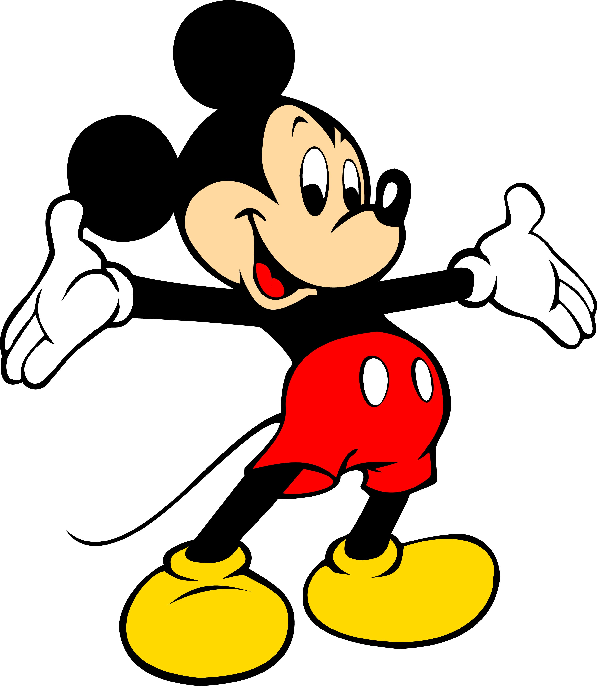
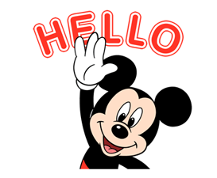

Mickey Mouse
 米奇老鼠（又稱米老鼠或米奇；英語：Mickey Mouse），是一個於1928年由華特·迪士尼和烏布·伊沃克斯於華特迪士尼工作室創作的卡通人物。米奇老鼠是一隻擬人化的黑色老鼠，且通常穿著紅色短褲、黃色大鞋和白色手套。作為華特迪士尼公司的官方吉祥物，米奇老鼠是世界上最知名的卡通人物之一。
>
從小會喜歡米老鼠的原因其實很簡單，因為從我有記憶開始，我家就只有米老鼠的娃娃，還有書跟很多很多迪士尼的雜誌，在這樣「沉浸式」的環境底下，培養了我對米老鼠的熱愛
>P.S 雖然我喜歡米老鼠，但是我對米妮完全沒有好感，因為他是米老鼠的女朋友，簡單來說就是我的情敵!!!!